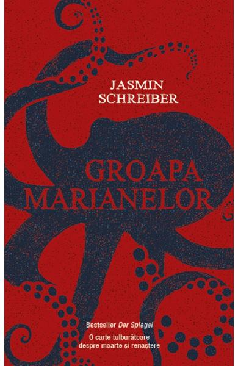

Groapa marianelor
Jasmin Schreiber
Paula nu are nevoie de prea multe ca sa traiasca: de un apartament modest, cativa bani de mancare si de fratiorul ei Tim, pe care il iubeste mai mult decat orice pe lume. Insa un accident teribil o arunca intr-o depresie profunda. Dupa un timp, intalnirea cu Helmut, un batran ciudat, ii reinvie dorinta de a trai. Calatoria lor aventuroasa reprezinta pentru fiecare dintre ei o reintoarcere la sine. O poveste coplesitoare, cu multa incarcatura emotionala, dar care uneori te face sa zambesti. O carte usor de citit, in care mitul Groapei Marianelor pare sa fie distrus de un personaj care este capabil sa se salveze din problemele vietii. Firul actiunii trezeste multa empatie.